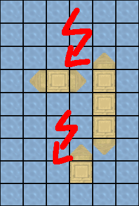
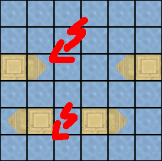
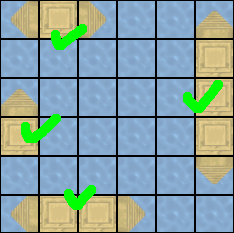
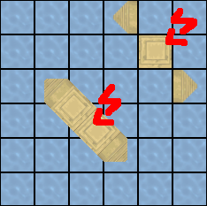

Schiffe versenken ist ein Spiel, das klassischerweise mit Zettel und Stift gespielt wird. Bei zwei Mitspielern fertigt sich jeder zwei 10x10 Kästchen große Pläne an. Diese stellen einmal das eigene und dann das gegnerische Meer oder Kampfgebiet dar. In das eigene Meer trägt man nun, ohne dass der Mitspieler dies sieht, seine Flotte ein. Dies geschieht, indem man Gebilde von unterschiedlicher Kästchenlänge einzeichnet.
Folgende Regeln müssen beim Platzieren eingehalten werden:




Der Schießende gibt an, auf welches Feld er feuert. Der Server sieht auf den Plan und antwortet mit Wasser oder Treffer. Ein Schiff gilt als versenkt, wenn alle Felder des Schiffes getroffen wurden. Es wird notiert, welche Felder bereits mit welchem Ergebnis abgeschossen wurden. Der Beschossene sieht ebenfalls, welche Felder der Gegner bereits getroffen hat. Der Spieler am Zug darf so lange schießen bis er ins Wasser getroffen hat. Danach ist der Gegenspieler am Zug. Wer zuerst alle Schiffe des Gegners versenkt hat, ist der Sieger.
Es gibt zwei Möglichkeiten:
Um Schiffe zu platzieren oder umzusetzen klickt man diese mit der linken Maustaste an. Daraufhin folgt das Schiff dem Mauszeiger und kann auf dem Spielfeld mit einem weiteren Linksklick platziert werden. Wenn das Schiff dem Mauszeiger folgt, kann es mit einem Rechtsklick wieder zurück in seine Ausgangsstellung gebracht werden. Ein Schiff kann mit dem Mausrad um 90° gedreht werden.
Der Spieler muss zunächst seinen Namen eingeben. Danach werden ihm drei Möglichkeiten geboten, er kann:
Placeholder